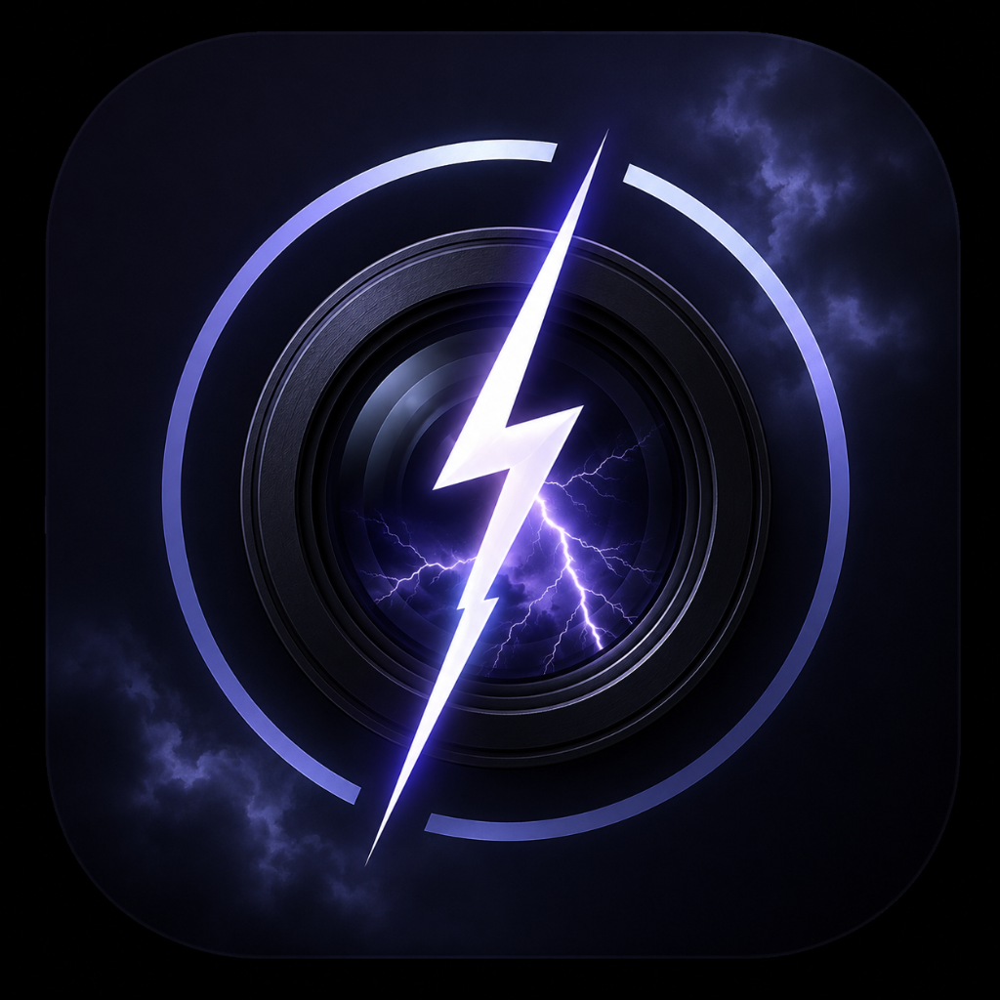

ThunderCam is an app that automatically photographs lightning. Contact: tonixhaker@gmail.com.
Nothing. ThunderCam is fully offline. It has no account, no sign-in, no server, no analytics, no ads, and it never sends anything over the network.
Photos the app captures are saved directly to your device's system photo library, into albums the app creates ("Lightning RAW", "Lightning Saved"). They stay on your device (and in your own iCloud Photos if you have it enabled — that is between you and Apple, under Apple's privacy policy). We never see them.
We do not collect, sell, or share any data. We do not profile you. There are no third-party SDKs that phone home.
Since we hold no data about you, there is nothing for us to hand over, correct, or erase — everything is already in your hands, in your photo library. Deleting the app's albums or the app itself removes everything the app ever produced. Questions? Email us and we will respond within 30 days.
The app is not directed at children under 13 (16 in the EU).
We may update this policy; the current version is always available at this page.
ThunderCam — застосунок, що автоматично фотографує блискавки. Контакт: tonixhaker@gmail.com.
Нічого. ThunderCam повністю офлайновий. Тут немає акаунтів, входу, сервера, аналітики чи реклами, і застосунок нічого не надсилає через мережу.
Зняті фото зберігаються напряму в системну галерею вашого пристрою, в альбоми застосунку («Lightning RAW», «Lightning Saved»). Вони залишаються на вашому пристрої (та у вашому iCloud Photos, якщо він увімкнений — це між вами і Apple, за політикою Apple). Ми їх ніколи не бачимо.
Ми не збираємо, не продаємо і не передаємо жодних даних. Ми не профілюємо вас. Немає сторонніх SDK, що кудись звітують.
Оскільки ми не зберігаємо про вас жодних даних, нам нічого видавати, виправляти чи видаляти — все вже у ваших руках, у вашій галереї. Видалення альбомів застосунку чи самого застосунку прибирає все, що він будь-коли створив. Питання? Напишіть нам — відповімо протягом 30 днів.
Застосунок не призначений для дітей до 13 років (16 у ЄС).
Ми можемо оновлювати цю політику; актуальна версія завжди на цій сторінці.